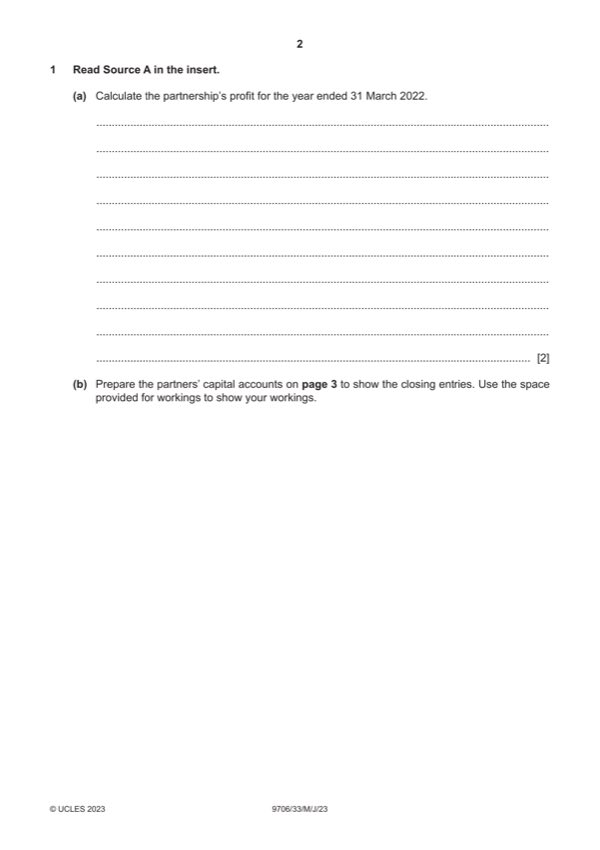

Question 1

Original paper page 2
Part 1(a) — solution
Calculate the partnership’s profit for the year ended 31 March 2022. 2
$
Interest on capital
Alan $300 000 4% 12 000 }
Betty $240 000 4% 9 600 }(1)
Residual profit
Alan 24 240
Betty 16 160
Profit for the year 62 000 (1)
2023 Page 8 of 19
9706/33 Cambridge International AS & A Level – Mark Scheme May/June 2023
Mark points
- Include the ideas shown in the solution above.
Part 1(b) — solution
Answer: 147 000
- Alan ($7 000+$300 000 4% + $24 240 – $32 000) = $11 240 (1)
- Betty ($2 600+$24 0000 4% + $16 160 – $34 000) = ($5640) (1)
- Alan $12 000 ÷ 8% = $150 000}
- Betty $9 600 ÷ 8% = $120 000} (1)
Mark points
- Alan ($7 000+$300 000 4% + $24 240 – $32 000) = $11 240 (1)
- Betty ($2 600+$24 0000 4% + $16 160 – $34 000) = ($5640) (1)
- Alan $12 000 ÷ 8% = $150 000}
- Betty $9 600 ÷ 8% = $120 000} (1)
Part 1(c) — solution
Answer: 150 00 · 120 00
Calculate the amount paid by J Limited into the partnership bank account. 4
$
Consideration
Value of assets taken over 570 000
Goodwill 124 000
694 000 (1)OF
8% debentures
150 00
Alan 0
120 00
Betty 0 (270 000) (1)
Ordinary shares (390 000) (1)
Balance paid in cash 34 000 (1)OF
2023 Page 10 of 19
9706/33 Cambridge International AS & A Level – Mark Scheme May/June 2023
Mark points
- Correct result: 150 00
- Correct result: 120 00
Part 1(d) — solution
Prepare the partnership bank account to show the closing entries. 4
Bank account
$ $
Balance b/d W1 35 600 (2)CF/(1)OF Trade payables 37 000
J Limited 34 000 (1)OF Alan 54 440 }(1)OF
Betty 21 840 }
Mark points
- Include the ideas shown in the solution above.
Part 1(e) — solution
Advise whether or not J Limited should continue the expansion strategy. Justify your answer. 5
Max 2 marks for ‘should’ comments
Max 2 marks for ‘should not’ comments
Mark points
- Include the ideas shown in the solution above.
Part 1 — solution
mark for decision supported with a comment.
It is only one year’s time, J Limited should take the acquisition as a long-term strategy. (1)
Acquiring businesses can bring synergy (1) and elimination of competitors. (1)
J Limited pays for the goodwill in the expectation of additional future profit. (1)
J Limited was too optimistic in its predictions. (1)
Synergy may not succeed because there may be a culture clash between two businesses. (1)
Accept other valid responses.
Mark points
- Include the ideas shown in the solution above.
Part 1 — solution
mark for decision supported with a comment.
Should be (max 2)
takes longer time to convert its working capital into cash. (1)
holding too much inventory (1)
not good enough in collecting their receivables / poor credit control (1)
paying the payables too early (1)
Should not be (max 2)
not a material difference (1)
may have different policies (1)
there may be non-financial factors that impact the financial statements (1)
Accept other valid responses.
Mark points
- Include the ideas shown in the solution above.